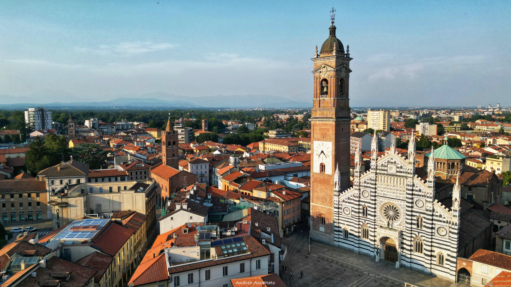

I luoghi manzoniani
Lecco
La città manzoniana

Monza
Luogo del convento della Monaca di Monza

Milano
Città del pane e della peste
Paesaggi reali e letterari dei Promessi sposi
«Addio monti sorgenti dall’acque, ed elevati al cielo...»
Alessandro Manzoni, I Promessi Sposi
Questo progetto esplora come i paesaggi reali di Lecco e della Lombardia abbiano ispirato l'immaginario letterario dei Promessi Sposi. I luoghi manzoniani e il loro valore culturale vengono qui mostrati e analizzati attraverso mappe, testi e immagini digitali.
Considerato uno dei padri della letteratura italiana moderna, Alessandro Manzoni (1785–1873) trasformò la lingua e il romanzo storico.
La città manzoniana
Luogo del convento della Monaca di Monza
Città del pane e della peste
Itinerario manzoniano per scoprire come realtà e letteratura si intrecciano nel paesaggio lombardo.
Scopri l’itinerario